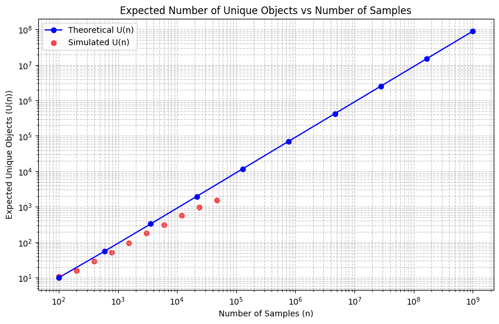

We would like to estimate the number of unique objects sampled (\(K\)) as a function of the number of samples (\(n\)), when sampling from a generator that can produce \(G\) total unique objects. The sample size \(n\) is very small compared to \(G\).
Let \(p_j\) be the probability of generating the \(j\)-th unique object in a single sample, for \(j=1, \dots, G\). The number of unique objects sampled in \(n\) trials, let’s call it \(K_n\), is a random variable. Typically, when asked for “the function describing the number,” one refers to the expected value of this random variable, \(E[K_n]\).
We can find \(E[K_n]\) using indicator variables. Let \(I_j\) be an indicator variable such that \(I_j=1\) if the \(j\)-th object is sampled at least once in \(n\) trials, and \(I_j=0\) otherwise. The total number of unique objects sampled is \(K_n = \sum_{j=1}^{G} I_j\). By linearity of expectation, \(E[K_n] = \sum_{j=1}^{G} E[I_j]\). The expectation of an indicator variable is the probability of the event it indicates: \(E[I_j] = P(I_j=1)\). \(P(I_j=1)\) is the probability that object \(j\) is sampled at least once. This is equal to \(1 - P(\text{object } j \text{ is never sampled in } n \text{ trials})\). The probability of sampling object \(j\) in one trial is \(p_j\). So, the probability of not sampling object \(j\) in one trial is \((1-p_j)\). Since the samples are independent, the probability of not sampling object \(j\) in \(n\) trials is \((1-p_j)^n\). Therefore, \(P(I_j=1) = 1 - (1-p_j)^n\).
Substituting this back, the function describing the expected number of unique objects sampled, \(U(n) = E[K_n]\), is: \[U(n) = \sum_{j=1}^{G} \left(1 - (1-p_j)^n\right)\]
This is the exact function for the expected number of unique objects. The probabilities \(p_j\) are specific to the generator and its probability distribution.
To have a better understanding of the distribution of \(p_j\) we can compute the MLE for the probability of observed object \(j\) as: \[\hat{p}_j = \frac{c_j}{n}\]
Since the sample size \(n\) is much smaller than the total number of unique objects \(G\) that the generator can produce, many (if not most) possible unique objects likely did not appear in your sample.
For any object \(j\) that was not observed, its count \(c_j\) is 0.
The MLE for these unobserved objects is \(\hat{p}_j = 0/n = 0\).
This is a major limitation if you want to estimate the full probability distribution over all \(G\) objects. Assigning a zero probability to unobserved items is inaccurate, especially when we know they could occur (i.e., their true \(p_j > 0\), albeit small). The true underlying exponential distribution implies that many objects have small, non-zero probabilities.
Code
from dgrec.utils import parse_genotypes, str_to_mutfrom dgrec.example_data import get_example_data_dirfrom Bio import SeqIOimport osimport numpy as npimport matplotlib.pyplot as plt#Importing a list of genotypes with the number of molecules detected for each genotypedata_path=get_example_data_dir()gen_list=parse_genotypes(os.path.join(data_path,"sacB_genotypes.csv"))gen_list[0:50:5]
from dgrec.library_size import estimate_library_size, plot_distributioncounts = [c for g,c in gen_list]results = estimate_library_size(counts, G=4**20, N=10**9)results
import numpy as npimport matplotlib.pyplot as pltfrom collections import Counterimport random# Define the range of n values (logarithmic scale)n_values = np.logspace(2, 9, num=10, base=10, dtype=int)# Calculate U(n) for each n (theoretical)u_n_values = []for n_target in n_values: u_n = estimate_library_size(counts, 4**20, n_target)["library_size"] u_n_values.append(u_n)# Simulate U(n) using random samplingsimulated_u_n_values = []genotypes = [g for g, c in gen_list]weights = countsn_values_sim = np.logspace(2, np.log10(sum(weights)), num=10, base=10, dtype=int)population = [genotype for genotype, count inzip(genotypes, weights) for _ inrange(count)]head_genotypes = [g for g, c in gen_list[:82]]sampled_genotypes = []for n_target in n_values_sim: new_sample = random.sample(population, n_target-len(sampled_genotypes)) sampled_genotypes += new_sample for genotype in new_sample: population.remove(genotype) # Remove sampled elements from the populationprint(len(population), len(sampled_genotypes)) n_head =len([g for g in sampled_genotypes if g in head_genotypes]) n_tail =len(sampled_genotypes) - n_headprint(f"Sampled {n_target} genotypes, {n_head} head and {n_tail} tail genotypes") unique_genotypes =set(sampled_genotypes) simulated_u_n_values.append(len(unique_genotypes))print(f"Simulated U(n) for n={n_target}: {len(unique_genotypes)}")# Plot U(n) vs nplt.figure(figsize=(10, 6))plt.plot(n_values, u_n_values, marker='o', linestyle='-', color='b', label='Theoretical U(n)')plt.scatter(n_values_sim, simulated_u_n_values, color='r', label='Simulated U(n)', alpha=0.7)plt.xscale('log')plt.yscale('log')plt.xlabel('Number of Samples (n)')plt.ylabel('Expected Unique Objects (U(n))')plt.title('Expected Number of Unique Objects vs Number of Samples')plt.grid(True, which="both", ls="--", alpha=0.7)plt.legend()plt.show()
47059 100
Sampled 100 genotypes, 94 head and 6 tail genotypes
Simulated U(n) for n=100: 11
46961 198
Sampled 198 genotypes, 188 head and 10 tail genotypes
Simulated U(n) for n=198: 16
46767 392
Sampled 392 genotypes, 376 head and 16 tail genotypes
Simulated U(n) for n=392: 29
46381 778
Sampled 778 genotypes, 745 head and 33 tail genotypes
Simulated U(n) for n=778: 52
45617 1542
Sampled 1542 genotypes, 1480 head and 62 tail genotypes
Simulated U(n) for n=1542: 96
44102 3057
Sampled 3057 genotypes, 2926 head and 131 tail genotypes
Simulated U(n) for n=3057: 180
41101 6058
Sampled 6058 genotypes, 5804 head and 254 tail genotypes
Simulated U(n) for n=6058: 306
35152 12007
Sampled 12007 genotypes, 11458 head and 549 tail genotypes
Simulated U(n) for n=12007: 571
23364 23795
Sampled 23795 genotypes, 22669 head and 1126 tail genotypes
Simulated U(n) for n=23795: 959
0 47159
Sampled 47159 genotypes, 44951 head and 2208 tail genotypes
Simulated U(n) for n=47159: 1550

The observation that \(U(n)\) follows a straight line when plotted against \(n\) on a log-log scale, given an underlying power-law distribution for \(p_j\), can be inferred analytically, especially in certain regimes of the power-law exponent \(\alpha\).
Here’s a simplified analytical argument:
Setup:
The expected number of unique items is \(U(n) = \sum_{j=1}^{G} (1 - (1-p_j)^n)\).
The probabilities follow a power law: \(p_j \approx C \cdot j^{-\alpha}\) for rank \(j \ge 1\).
Your observation is \(U(n) \propto n^\beta\), which means \(\log(U(n)) \approx \beta \log(n) + \text{constant}\).
Continuous Approximation: For large \(G\), we can approximate the sum with an integral: \(U(n) \approx \int_{1}^{G} (1 - (1 - p(x))^n) dx\), where \(p(x) = C x^{-\alpha}\).
Integrand Behavior: The term \((1 - p(x))^n\) represents the probability of not seeing item \(x\) in \(n\) draws.
When \(n \cdot p(x)\) is large (common items, small \(x\)), \((1 - p(x))^n \approx 0\). The integrand is \(\approx 1\).
When \(n \cdot p(x)\) is small (rare items, large \(x\)), \((1 - p(x))^n \approx 1 - n \cdot p(x)\). The integrand is \(\approx n \cdot p(x)\).
Characteristic Rank (\(x^*\)): The transition occurs roughly when \(n \cdot p(x^*) \approx 1\). \(n \cdot C (x^*)^{-\alpha} \approx 1 \implies x^* \approx (n C)^{1/\alpha}\). This rank \(x^*\) marks the approximate boundary up to which most items have been seen at least once.
Approximating \(U(n)\): We can approximate \(U(n)\) by considering the items up to rank \(x^*\). Most items with rank \(j \le x^*\) will have been seen at least once. The number of such items is roughly \(x^*\). \[U(n) \approx x^* \approx (n C)^{1/\alpha} = C^{1/\alpha} \cdot n^{1/\alpha}\]
Resulting Power Law for \(U(n)\): This approximation suggests that \(U(n) \propto n^{1/\alpha}\). Taking the logarithm: \(\log(U(n)) \approx \frac{1}{\alpha} \log(n) + \log(C^{1/\alpha})\) This is the equation of a straight line on a log-log plot with slope \(\beta = 1/\alpha\).
Important Caveats and Refinements:
Case \(\alpha > 1\): The argument above holds reasonably well. The total probability mass \(\sum p_j\) converges. The number of unique items grows sub-linearly with \(n\), with an exponent \(1/\alpha < 1\).
Case \(\alpha < 1\): The total probability mass \(\sum p_j\) diverges as \(G \to \infty\). In this regime, new items are discovered much more rapidly. The analysis shows that \(U(n)\) grows linearly with \(n\), i.e., \(U(n) \propto n^1\). The log-log slope \(\beta\) would be 1. This happens because the contribution from the \(n \cdot p(x)\) part of the integral dominates and scales linearly with \(n\).
Case \(\alpha = 1\): This is a boundary case (like Zipf’s law). The total probability diverges logarithmically. The growth is found to be \(U(n) \propto n / \log n\) (or related forms involving \(\log n\)). This is not a pure power law, so a log-log plot might show slight curvature, although it can look approximately linear over limited ranges with a slope close to 1.
Conclusion:
The linear relationship you observe on the log-log plot is analytically expected for a power-law probability distribution \(p_j \propto j^{-\alpha}\): * If the slope \(\beta\) is less than 1, it suggests \(\alpha > 1\), and you can estimate \(\alpha \approx 1/\beta\). * If the slope \(\beta\) is approximately 1, it suggests \(\alpha \le 1\).